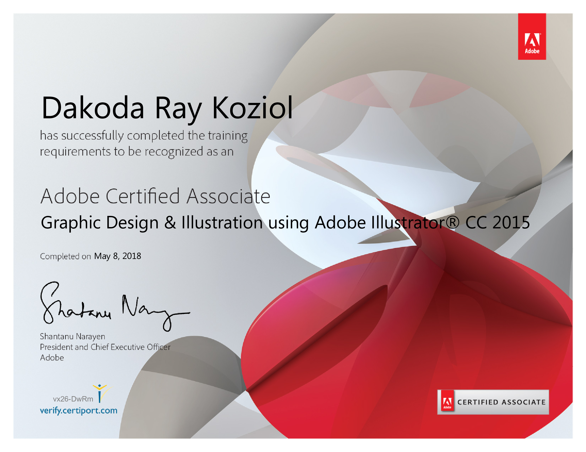
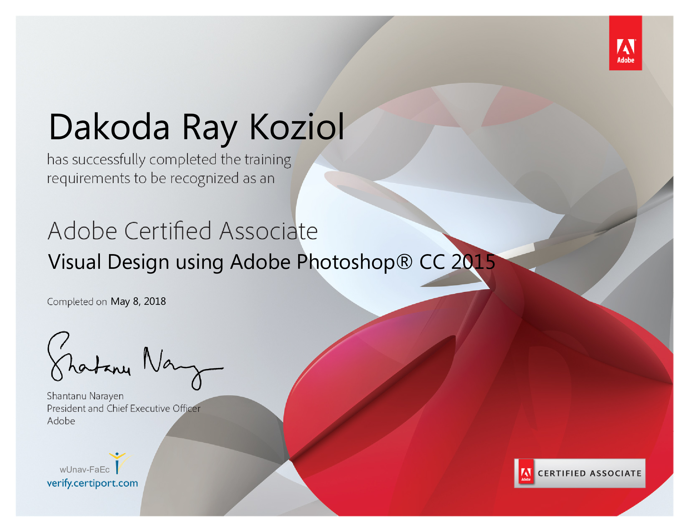
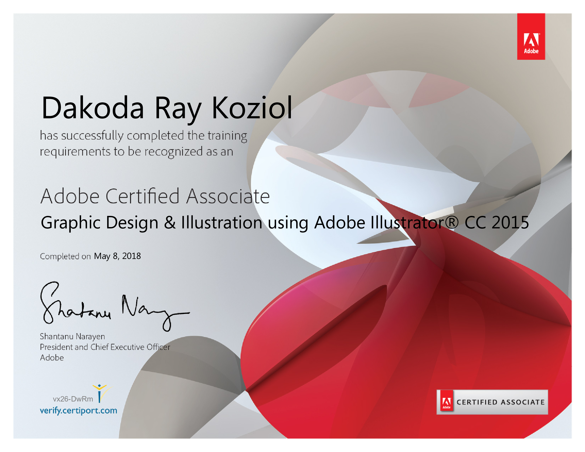
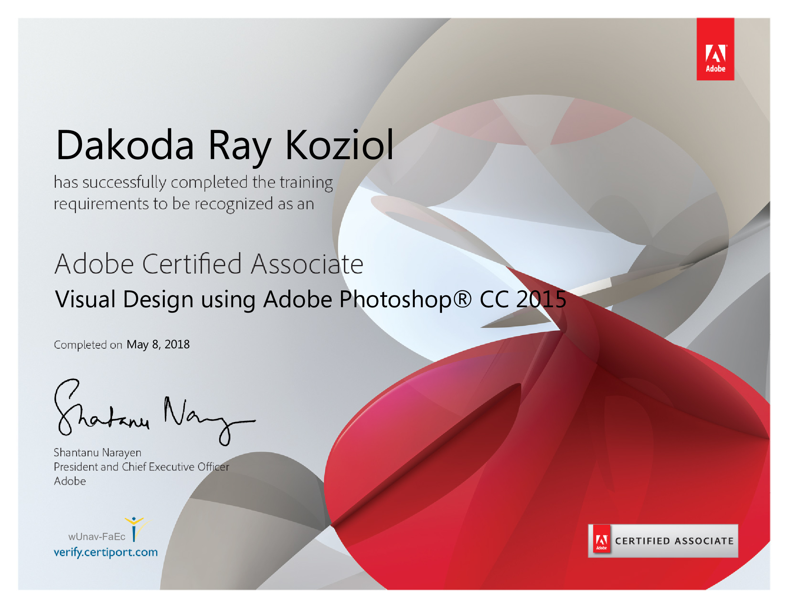

Adobe Certifications
Before I graduated, I got certified in both Adobe Illustrator and Photoshop. I think we took the CC 2015 versions because that was what we started on, but I was using CC 2018 when I took those tests.
 Before I graduated, I got certified in both Adobe Illustrator and Photoshop. I think we took the CC 2015 versions because that was what we started on, but I was using CC 2018 when I took those tests.
 